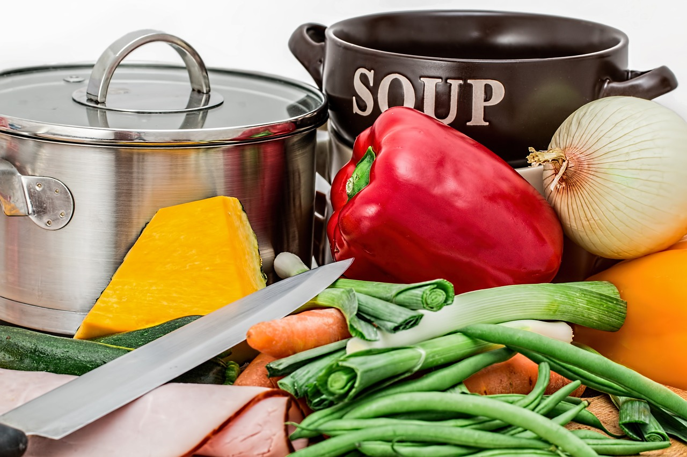
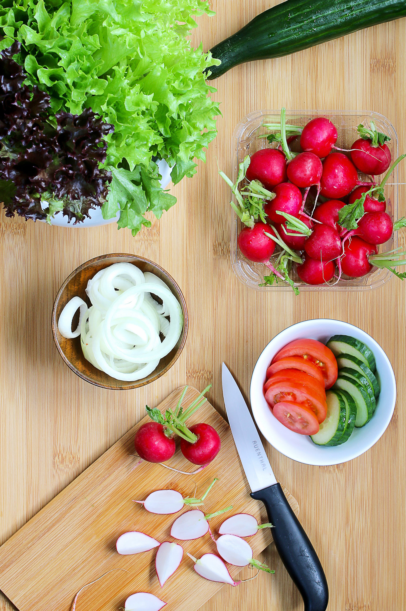
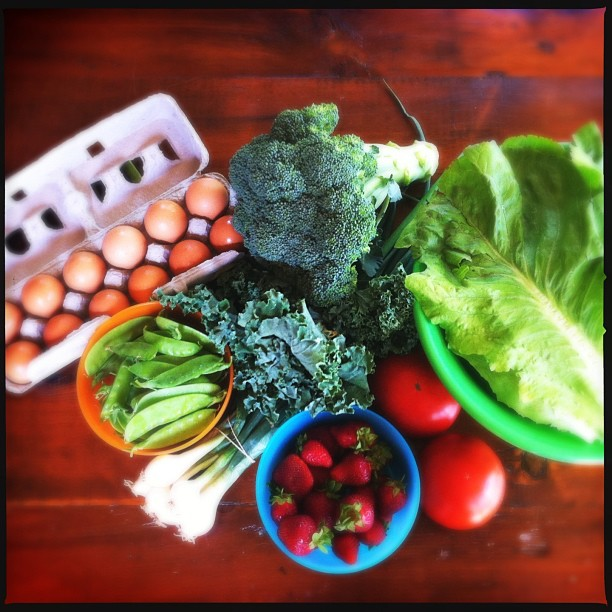

Quick meal ideas
Meal ideas with basic ingredients
Hearty and flavorful Pumpkin Soup New
Pumpkin, carrots, spices.
Fatalla Pasta with Tomato and Zucchini

Fatalla Pasta, Tomato, Zucchini.
Salad
Lettuce, beets, tomatoes.
Vegetable Omelette
Eggs, broccoli, snap peas, scallions.